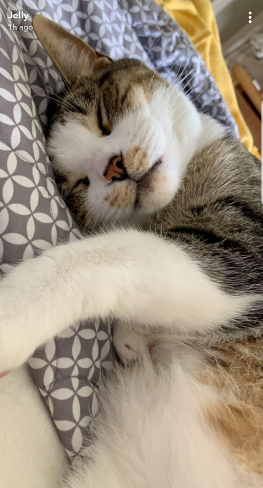
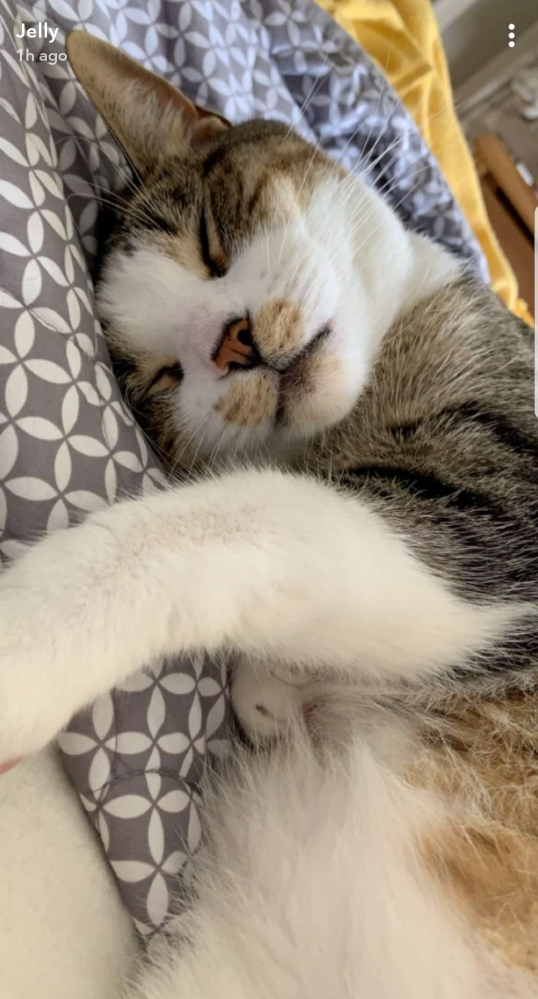

My name is Trever Thomas, and I have spent over a decade building a successful career in the medical device industry. Starting as a Delivery Driver, I navigated my way through various roles, eventually becoming a Fulfillment Specialist and a Surgery Coordinator. These roles allowed me to develop a strong foundation in logistics, customer service, and the intricacies of surgical procedures.
Beyond my professional life, I am a proud father to my wonderful son, Henry, and a devoted husband to my amazing wife, Ashley. Our family also includes Peter, our beloved rescue cat, who brings joy and warmth to our home.
Throughout my career, I have always been driven by a desire to learn and grow. This drive led me to discover new passions: logistics and web development. Intrigued by the limitless possibilities of creating and improving both physical and digital experiences, I decided to pursue these interests with the same dedication that characterized my previous professional journey.
I am now eager to transition into roles that combine my skills in logistics and web development, seeking opportunities that will allow me to further develop my expertise and make a meaningful impact in these dynamic fields. My background in the medical device industry has equipped me with a unique perspective and a strong work ethic, which I am excited to bring to new challenges.
As I embark on this new chapter, I am committed to continuous learning and professional growth, with the goal of becoming proficient and innovative in both logistics and web development. I look forward to the challenges and opportunities ahead, confident that my diverse experiences will contribute to my success in these exciting new careers.